Source: Zotero note; match: identical attachment.Open item in Zotero
The emergence of Vision Language Action (VLA) models marks a paradigm shift from traditional policy-based control to generalized robotics, reframing Vision Language Models (VLMs) from passive sequence generators into active agents for manipulation and decision-making in complex, dynamic environments. This survey delves into advanced VLA methods, aiming to provide a clear taxonomy and a systematic, comprehensive review of existing research. It presents a comprehensive analysis of VLA applications across different scenarios and classifies VLA approaches into several paradigms: autoregression-based, diffusion-based, reinforcement-based, hybrid, and specialized methods; while examining their motivations, core strategies, and implementations in detail. In addition, foundational datasets, benchmarks, and simulation platforms are introduced. Building on the current VLA landscape, the review further proposes perspectives on key challenges and future directions to advance research in VLA models and generalizable robotics. By synthesizing insights from over three hundred recent studies, this survey maps the contours of this rapidly evolving field and highlights the opportunities and challenges that will shape the development of scalable, general-purpose VLA methods.
GENERAL OVERVIEW:
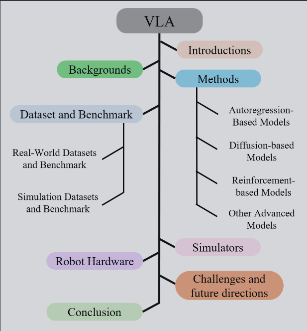
BACKGROUND:
significant advance toward general-purpose embodied intelligence
Traditional Robotics: isolated perception pipeline, hand-engineered strategies and task-specific reinforcement learning
early LLM / VLM FM
CV : CNN, ViT (Self-attention)
NLP: Large-scale pretraining - BERT, GPT, T5, GPT-4
RL: Policy Optimization and Sequential Decision-making - DQN, PPO to Decision Transformer
VLM: dual-stream or single-stream transformer alignment -> contrast learning (CLIP) -> Instruction-tuned, dialogue-centric multimodal models (BLIP-2, Flamingo. LLaVA)
development of VLA - unifying visual perception, language understanding and executable control within a single framework
(1) Encode images and instructions as prefix or context tokens
(2) Robot states and sensory feedback as state tokens
(3) Autoregressive generation of action tokens as control sequences
Data: Datasets + Simulators - OXE, BridgeData | THOR, Habitat, Mujuco, Isaac Gym, CARLA - mitigate the scarcity of real-world robot data and accelerate training
VLA MODELS
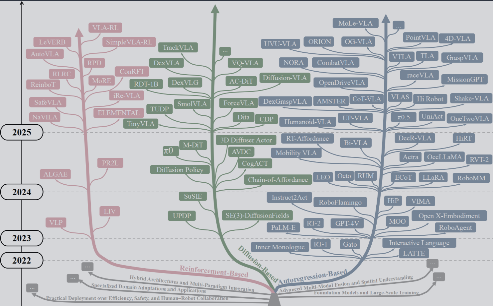
Autoregression-based
generate action step by step, conditioned on prior context, perceptual inputs and task prompts
(1) Autoregressive Generalist VLA Methodologies - Tokenizing Multimodal Inputs
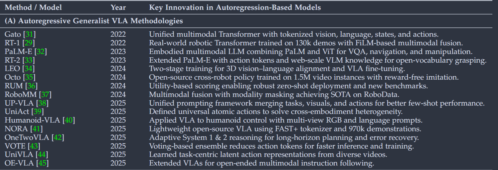
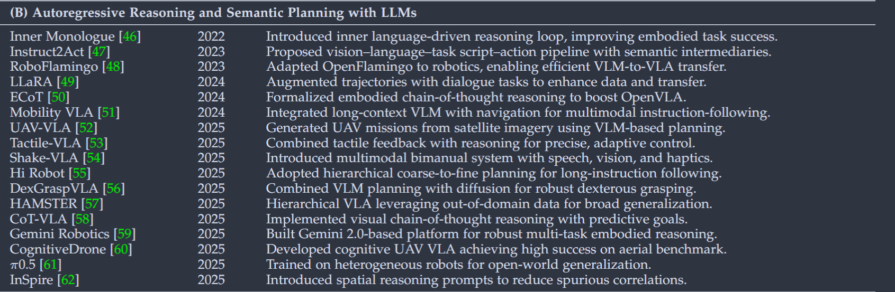
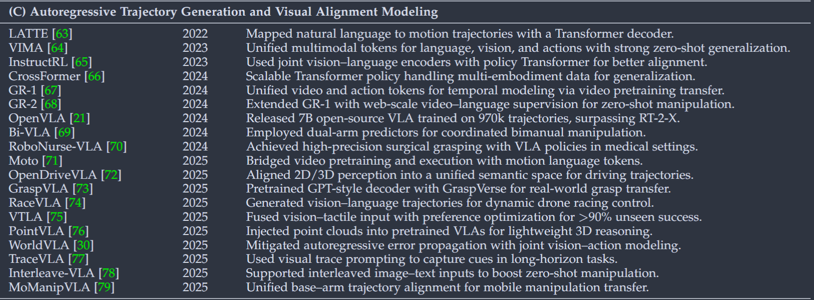
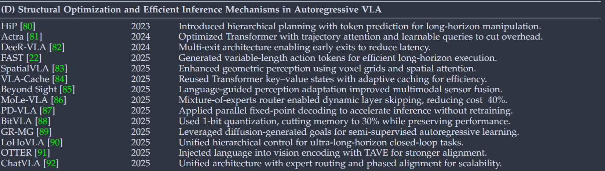
Gato, RT-1 / RT-2 (Scaling), PaLM-E
Octo, LEO, UniAct - aligning visual-linguistic modalities with action abstractions for cross-platform compatibility
NORA and RoboMM - combine action generation with language reasoning and adaptive prompting
(2) Autoregressive Reasoning and Semantic Planning with LLMs
Inner Monologue - self-talk-style reasoning + pre-action planning and post-action reflection -> Prompt-to-walk, RoboFlamingo, RoboMM
Hierarchical frameworks - InSpire, CoT-VLA
Platformization and Systematization - Gemini Robotics, Agentic Robot, pi0.5, fast
(3) Autoregressive Trajectory Generation and Visual Alignment Modeling
LATTE : Language directly to trajectories
VIMA, InstructRL: joint tokenization of language, vision, and action
MOO, GPT-Based Methods - Pretrained VL backbones for open-world generalization and lightweight trajectory generation
GR-1/2 - Video generation pretraining to robotics
CronusVLA, WorldVLA - temporal consistency
TrackVLA, Uni-Navid - long-horizon prompting
(4) Structural Optimization and Efficient Inference Mechanisms in Autoregressive VLA
HiP - tasks into symbolic planning, video prediction and action execution
DeeR-VLA: dynamic and adaptive inference
FAST: token-efficient
OTTER, ChatVLA: Integrate efficiency with multi-modal reasoning
2. Diffusion-based
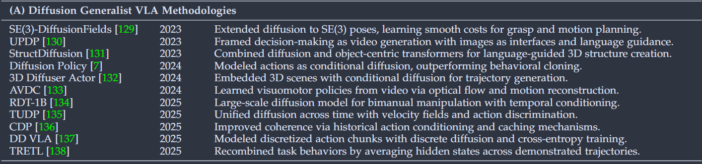
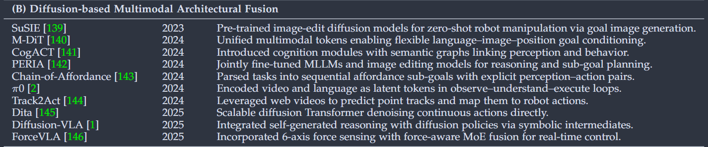
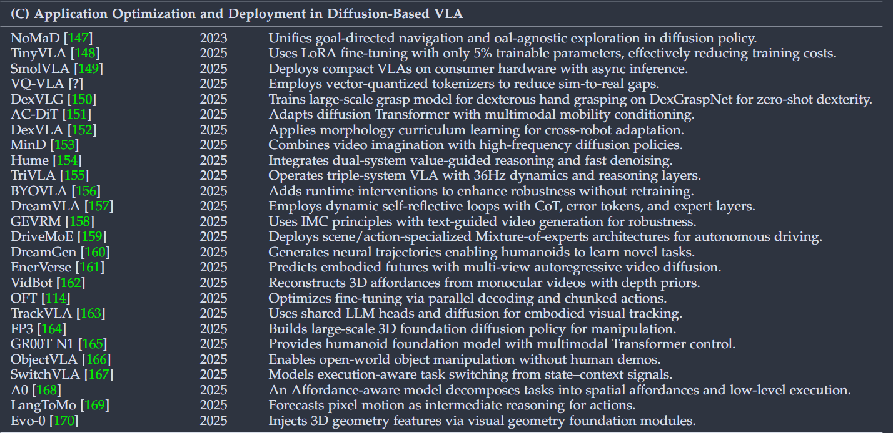
(1) DIffusion Generalist VLA Methodologies
Enabling multiple valid trajectories from identical observations
Geometry-aware methods : SE(3) constraints into diffusion
Reinterpreting policy learning as video generation
“These advances mark three transitions: deterministic to probabilistic generation, Euclidean to geometry-aware representations, and supervised to self-supervised paradigms. This reframing as generative modeling enables multi-task generalization, few-shot adaptation, and natural language interfaces…. However, temporal coherence remains fragile under dynamic environmental shifts.” (Zhang 等, 2025, p. 7)
(2) Diffusion-Based Multimodal Architectural Fusion
“The integration of Transformers in VLA systems drives unified modeling of vision, language, and action within single frameworks, moving beyond modular pipelines to capture intricate interdependencies in embodied intelligence.” (Zhang 等, 2025, p. 8)
Dita, Diffusion Transformer Policy - Scaling attention-based architectures
M-DiT: token-space alignment
Force-VLA: Force sensing as a first-class modality + Force-aware MoE
Diffusion-VLA, CogACT: diffusion policy + explicit reasoning
PERIA, pi0: repurposing image editing models for zero-shot manipulation
(3) Application Optimization and Deployment in Diffusion-Based VLA - efficiency, adaptability, robustness
EFFICIENT
TinyVLA, SmolVLA: lightweight design
VQ-VLA: vector-quantized action tokenizers
ADAPTABILITY
DexVLG - large-scale curated datasets
AC-DiT: mobility-to-body conditioning to unify perception and actuation
ARCHITECTURAL
MinD, TriVLA - for interpretability
RUNTIME ROBUSTNESS
BYOVLA - dynamically editing irrelevant visual regions
DreamVLA - self-reflective, error-aware
FOUNDATION MODELS
FP - 3D policy model pre-trained on 60,000 trajectories
GR00T N1: multi-modal transformer into a humanoid foundation system
FINE-TUNING AND GENERALIZATION
ObjectVLA, SwitchVLA: open-world object manipulation and execution-aware task switching
LangToMo, Evo-0: novel intermediate representations
limitations: Temporal coherence, computationally expensive, safety-critical reliability, diluting modality-specific strengths
3. Reinforcement-based Fine-Tune Models in VLA
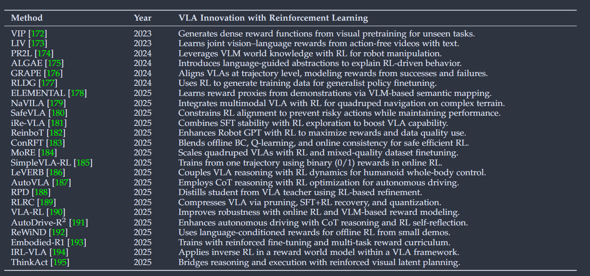
(1) Reinforcement-based Fine-Tune Strategies in VLA
Earlier Methods 0 large-scale human video datasets or manipulation datasets + reward strategies
Language + images -> reward proxies and cross-modal state language representation
reward function or loss function design - learning from human demonstrations - SafeVLA
NaVILA - single-stage RL policy fine-tuning
MoRE - multiple low-rank adaptive modules as distinct experts
LeVERB - proposing a hierarchical VLA framework for whole-body control (humanoid)
AutoVLA (Autonomous Driving) - autoregressive generation model equipped with reasoning and action capabilities
4. Other advanced research
(1) Hybrid Architectures and Multi-Paradigm Integration
HybridVLA - diffusion-based continuous trajectory generation + autoregressive token-level reasoning
Fast-in-Slow - low-latency execution module within a slower yet cognitively richer VLM backbone
RationalVLA - learnable latent embeddings
(2) Advanced Multi-Modal Fusion and Spatial Understanding - Feature concatenation to modeling geometry, affordances, spatial constraints
CLIPort - pick and place heatmap
VoxPoser - composable 3D value map guided by LLM
3D-VLA - integrate autoregressive language modeling with diffusion-based action prediction
Multi-view Perception: RoboUniView, BridgeVLA, ReKep, RoboPoint, GeoManip
(3) Specialized Domain Adaptations and Applications
Safety-critical (autonomous driving):
CoVLA - large-scale VLA dataset tailored for this domain
UI: ShowUI
Humanoid:
LeVERB - hierarchical architecture where vl policy learns latent action vocabularies from kinematic demonstrations
Robot Orchestra:
AutoRT - strategic planning to VLMs
MoManipVLA - waypoint-based trajectory generation and dual-layer motion optimization
CubeRobot - dual-loop VisionCoT and Memory Stream to Rubik’s Cube solving
(4) FM and Large-Scale Training
Datasets：DROID, General Flow Framework, ViSA-Flow
Finetuning strategy:[226]
Chain of thought reasoning into embedded policy learning: [227]
(4) Efficiency, Safety, Human-Robot Collaboration
Efficiency - RTC (real-time chunking), EdgeVLA, DeeR-VLA(early exit)
Knowledge Integrity - CEEDVLA, RoboMamba,ReVLA
Safety Robustness - SAFE (internal VLA feature representations), DyWA
Human-Robot Collaboration
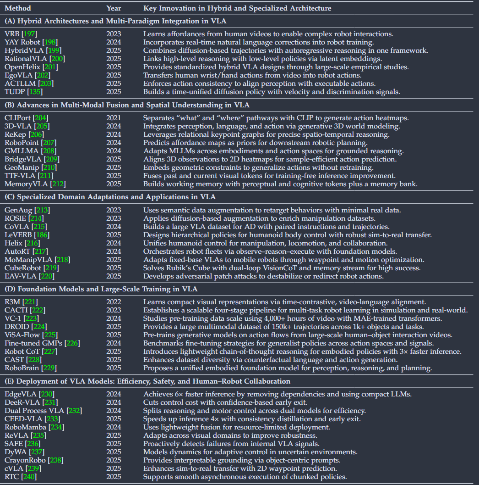
DATASETS AND BENCHMARKS
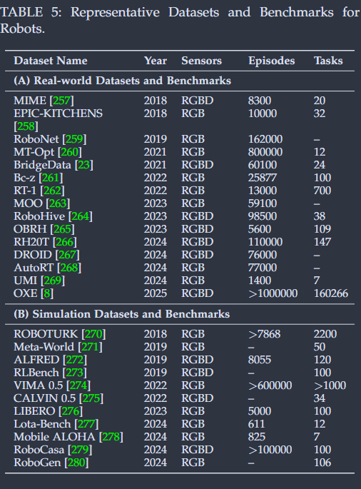
Real-world Datasets and Benchmarks for Embodied Robotics - MIME, RoboNet, MT-Opt / BridgeData, RT- 1, Bc-z, RoboHive, RH20T
OXE - 22 robot datasets among 21 institutions covering 527 skills and 160,226 tasks
Simulation Datasets and Benchmarks for Embodied Robotics
Benchmarks: Meta-world, RLBench, RoboGen, VirtualHome, Relay Policy Learning
Datasets: ROBOTURK(6-DoF simulated dataset), iGibson0.5, VIMA, CALVIN, LOTA-Bench
SIMULATORS
THOR: photo-realistic 3D indoor scenes
Habitat: scalable simulation platforms
ALFRED: long-horizon, compositional tasks with non-reversible state changes
MuJoCo: open-source physics engine
Isaac Gym
Tips: What aspects did you question, how do you think it can be improved?
Tips: What was done, what problem was solved, innovations and shortcomings?